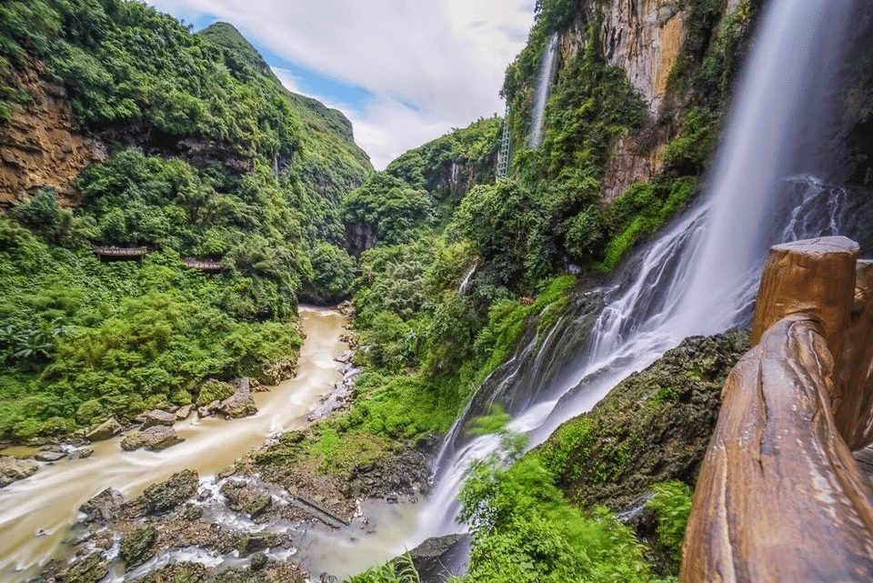
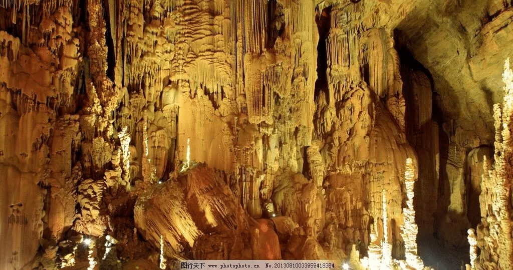
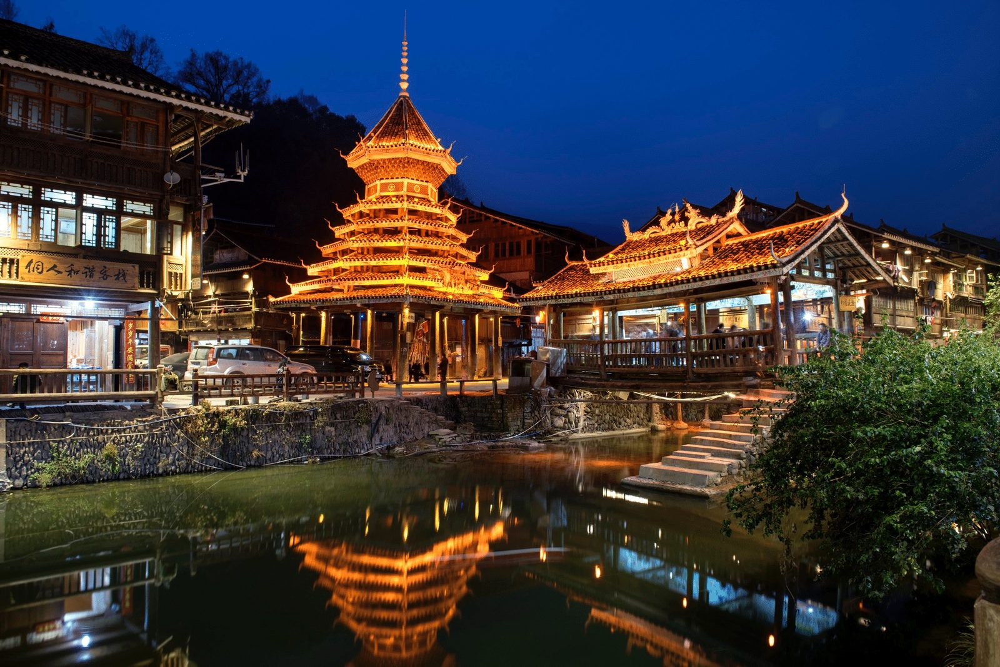

除了热门景点，贵州还有许多同样值得一游的美丽地方

马岭河峡谷被誉为“地球上最美丽的伤疤”，峡谷内瀑布成群，翠竹倒挂，溶洞相连，两岸古树名木点缀其间，景色十分秀丽。
"峡谷很壮观，瀑布很多，拍照特别出片，就是走下来有点累，不过很值得！"
万峰林由近两万座奇峰翠峦组成，峰林密集奇特，气势宏大壮阔，是中国西南三大喀斯特地貌之一，徐霞客曾赞誉“天下山峰何其多，惟有此处峰成林”。
"峰林的线条太美了，尤其是在日出和日落的时候，光影效果绝佳，很适合摄影爱好者。"

织金洞是中国目前发现的一座规模宏伟、造型奇特的洞穴资源宝库，洞内景观琳琅满目，形态万千，色彩纷呈，被称为“岩溶博物馆”。
"太震撼了，里面的钟乳石形状各异，灯光打得也很好，仿佛进入了一个奇幻世界，值得一去。"
青岩古镇是贵州四大古镇之一，始建于明洪武十一年，古镇内设计精巧、工艺精湛的明清古建筑交错密布，寺庙、楼阁画栋雕梁、飞角重檐相间。
"古镇很有历史感，石板路、老房子都保存得不错，还有很多特色小吃，比如青岩猪脚，味道很棒。"

肇兴侗寨是全国最大的侗族村寨之一，素有“侗乡第一寨”之美誉。寨中房屋为干栏式吊脚楼，鳞次栉比，错落有致，全部用杉木建造，硬山顶覆小青瓦，古朴实用。
"很喜欢侗族的文化，鼓楼很漂亮，晚上的篝火晚会很热闹，还能听到侗族大歌，非常棒的体验。"
百里杜鹃是国家级森林公园，总面积约125.8平方公里，因天然原始林带宽1-3公里，绵延50余公里而得名，是国家级5A级旅游景区。
"每年四月份花开的时候最美，漫山遍野的杜鹃花，红的、粉的、白的，非常壮观，值得一看！"
订阅我们的电子邮件，获取最新的贵州旅游资讯、优惠活动和旅行灵感
我们尊重您的隐私，不会向第三方分享您的信息